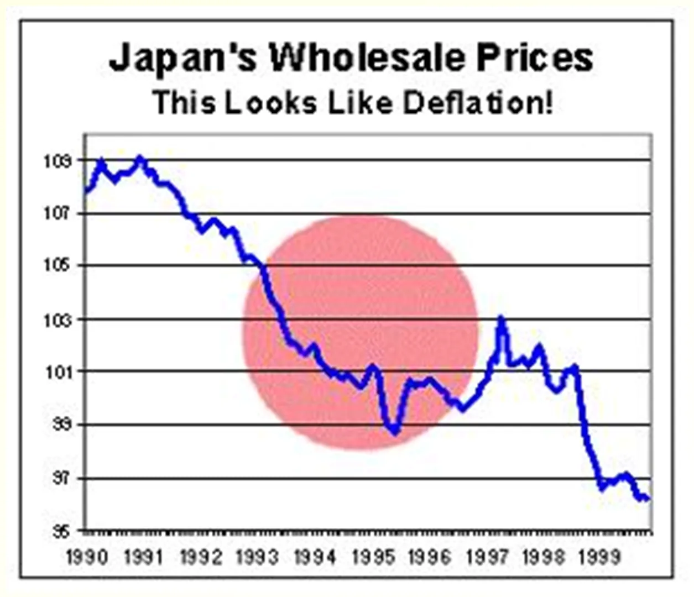
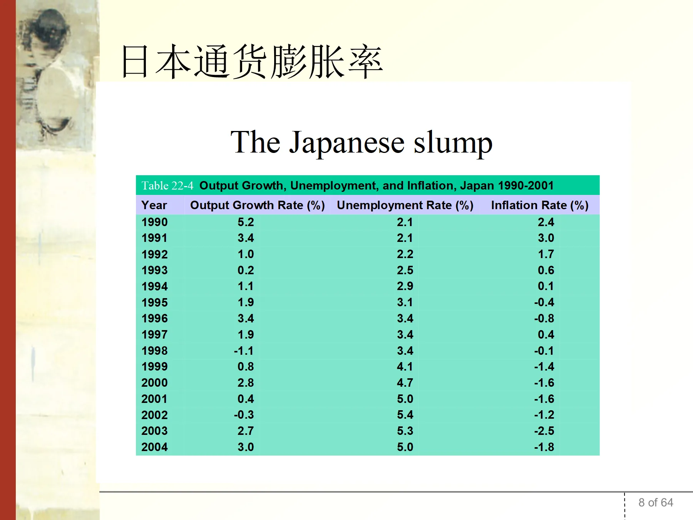

第 2A 章 日本泡沫与通货紧缩Supplemental Case
对应文件：
notes2_supplemental.ppt｜ 页码：2A-1 ~ 2A-9 ｜ 共 9 页性质：教师自编的中文案例，衔接第 2 章（物价指数）与第 5 章（通胀成因）。全章原文为中文，按「原文照录＋解释」处理，不补英译。
本章地图
| 页码 | 内容 |
|---|---|
| 2A-1 | 提问：为什么厌恶通胀，却也要担心通缩 |
| 2A-2 ~ 2A-3 | 日本房地产泡沫的形成（广场协议、低利率）与破灭（1991、坏账 6000 亿美元、失去的十年） |
| 2A-4 ~ 2A-6 | 通缩的表现与恶性循环（企业、银行、消费者三条链） |
| 2A-7 | 通缩的政策性成因（1986–1989 未加息；1990 年代降息失效） |
| 2A-8 | 日本 1990–2004 增长、失业、通胀数据 |
| 2A-9 | 政策讨论：货币政策、财政政策、不良债权、金融自由化 |
2A-1日本的房地产泡沫与通货紧缩（deflation）
原文（中文，照录）
日本的房地产泡沫与通货紧缩(deflation)
We hate inflation.
But why deflation?
中文对照（原页英文部分的译文）
我们厌恶通货膨胀。
但为什么（也要担心）通货紧缩？
- 全章的问题意识：通胀有害，通缩同样有害。第 5 章会论证通胀的社会成本，本章补上另一端——通缩的代价。
- 通缩之害不在「物价下降」本身，而在名义债务不变、实际债务上升（债务–通缩机制，2A-5 提及费雪的 debt-deflation 理论）。
2A-2日本房地产泡沫（形成）
原文（中文，照录）
20世纪80年代后期，为刺激经济的发展，日本中央银行采取了非常宽松的金融政策，鼓励资金流入房地产以及股票市场，致使房地产价格暴涨.
1985年9月，美国、联邦德国、日本、法国、英国5国财长签订了"广场协议"，决定同意美元贬值。美元贬值后，大量国际资本进入日本的房地产业，更加刺激了房价的上涨.
日本人发现炒股票和炒房地产来钱更快，于是纷纷拿出积蓄进行投机。到1989年，日本的房地产价格已飙升到十分荒唐的程度。当时，国土面积相当于美国加利福尼亚州的日本，其地价市值总额竟相当于整个美国地价总额的4倍。到1990年，仅东京都的地价就相当于美国全国的总地价。
教师备注（原文＋译文）2 段
教师备注（原文照录）
"广场协议"之后，日元开始大幅升值。为了降低日元的升值压力以及刺激内需，日本一再放松银根，使基准利率创下了历史新低，导致过剩资金大量流入股市和不动产市场，吹起了巨大泡沫。
"广场协议"签订后，在不到三年的时间里，美元对日元贬值了50%。
- 因果链要能复述：广场协议（1985-09）→ 美元贬值、日元升值 → 为对冲升值压力而放松银根 → 基准利率创新低 → 资金涌入股市与房地产 → 泡沫。
- 三个必须记住的数字：1985 年 9 月签广场协议；不到三年美元对日元贬值 50%；1989 年日本地价市值 = 美国全国的 4 倍（日本国土面积仅相当于加州）。
- 1990 年「东京都地价 ≈ 美国全国地价」是泡沫顶点的标志性数据，常用于说明资产价格脱离基本面的程度。
2A-3日本房地产泡沫（破灭）
原文（中文，照录）
1991年后，随着国际资本获利后撤离，由外来资本推动的日本房地产泡沫迅速破灭，房地产价格随即暴跌。
到1993年，日本房地产业全面崩溃，企业纷纷倒闭，遗留下来的坏账高达6000亿美元。
这次泡沫不但沉重打击了房地产业，还直接引发了严重的财政危机。受此影响，日本迎来历史上最为漫长的经济衰退。人们常把20世纪90年代视为日本"失去的十年"。
- 时间与规模：1991 年泡沫破灭 → 1993 年房地产业全面崩溃 → 坏账 6,000 亿美元。
- 「失去的十年」（Lost Decade）= 1990 年代；后续延长为「失去的二十年」，是宏观教材讨论长期停滞（secular stagnation）的标准案例。
- 传导路径：资产价格暴跌 → 抵押品贬值 → 银行坏账 → 信贷收缩 → 财政救银行 → 财政危机。这条链在 2A-5 展开为「金融加速器」。
2A-4日本的通货紧缩（价格走势）
原文（中文，照录）
日本的通货紧缩

图中文字（照录）
Japan's Wholesale Prices
This Looks Like Deflation!
日本批发物价
这看起来就是通货紧缩！
- 纵轴为批发物价指数（1990 年约 110，1999 年约 96），横轴 1990–1999。十年间指数下降约 13%，即年均通缩约 1.4%。
- 图中红圈标出 1993–1996 年的加速下跌段——对应 2A-8 表中 1994 年通胀 0.1%、1995 年 −0.4%、1996 年 −0.8%。
- 注意用批发物价而非 CPI：日本通缩首先出现在企业间交易价格，再传导至消费价格。
2A-5日本的通货紧缩（恶性循环之一）
原文（中文，照录）
自20世纪90年代初以来，日本经济就因物价不断下降而深受其苦. 首先是股票价格下跌，然后土地价格也跟着下降，到后来商品和服务价格也持续下降，日本出现了通货紧缩的恶性循环 。
物价的持续下降，首先冲击生产者，厂商为了降低损失，会采取减少生产、裁员、延后投资等行动。
由于土地和股票债券等抵押资产价值严重"缩水"，银行被迫收缩信用，企业的廉价资金来源受到很大制约，资金周转出现困难，不得不大量抛售证券资产和房地产变现，从而进一步加快了金融资产价格的下跌。
金融加速器理论
债务-通缩理论
教师备注（原文＋译文）1 段
教师备注（原文照录）
企业惜借、银行惜贷
- 通缩的传导顺序必须记清：股价 → 地价 → 商品与服务价格。资产价格先跌，一般物价后跌。
- 两条理论线索（原页只给名词，含义要能展开）： | 理论 | 提出者 | 机制 | |---|---|---| | 金融加速器（financial accelerator） | Bernanke 等 | 资产价格跌 → 抵押品价值跌 → 外部融资溢价升 → 信贷收缩 → 投资与产出再跌（正反馈） | | 债务–通缩（debt-deflation） | Irving Fisher | 物价跌 → 债务实际值上升 → 被迫抛售资产偿债 → 资产价格再跌 → 债务实际值再升 |
- 「企业惜借、银行惜贷」是这两条理论的共同结果：即使利率为零，信贷也不扩张（流动性陷阱的微观基础）。
2A-6日本的通货紧缩（恶性循环之二）
原文（中文，照录）
而失业的快速增加，会导致消费者的疑虑加深，在消费上采取过度谨慎保守的态度，使得国内的消费需求进一步萎缩。
同时，物价持续下降，使消费者认为延迟购买更能获得较大的利益，消费意愿再受打击。
而原本希望购置后能增值的耐久财产或是投资产品，也因价值的不断下跌，使得人们资产缩水，为了弥补损失，对于当前消费更加保守谨慎。这在并非急需而金额又高的房屋市场、汽车市场、家电市场等方面，情况就很严重。
生产者被迫进一步减少生产、裁员、停止投资，消费者不愿意去消费。
- 三条消费抑制渠道：失业上升 → 收入预期恶化；预期物价再跌 → 延迟购买；资产缩水 → 财富效应为负。
- 「延迟购买」是通缩特有的机制：预期价格下跌使实际利率上升，消费者理性地推迟耐用品支出，总需求进一步萎缩。这是通胀所没有的。
- 受影响最重的是高价耐用品：房屋、汽车、家电——因为推迟购买的收益与金额成正比。
2A-7日本通货紧缩的政策性成因
原文（中文，照录）
一是在1986—1989年期间，在金融投资明显过热的情况下，政府没有及时提高利率，长期的低利率政策，大大降低了金融投资成本，致使虚拟资本过度膨胀，引发了严重的泡沫经济成分。
二是在经济下降趋势已经非常明显的环境下，利率仍然保持比较高的水平，进一步加剧了通货紧缩的程度。
尽管日本政府在1992年以后连续多次下调基准利率，但已经难以改变人们的预期，货币政策的"失效"日趋明显 。
教师备注（原文＋译文）1 段
教师备注（原文照录）
日本通货紧缩的成因及其影响 2000-6-7 来源：中国论文下载中心 [ 08-06-22 10:18:00 ] 作者：赵晋平
- 政策失误的两段式结构（考试常考）： | 阶段 | 时间 | 错误 | 后果 | |---|---|---|---| | 泡沫期 | 1986–1989 | 该加息而未加，长期低利率 | 虚拟资本膨胀，泡沫累积 | | 破灭后 | 1990 年代 | 降息太慢、太晚（初期利率仍偏高） | 通缩加深，预期固化 |
- 「货币政策失效」的机制：利率已接近零（零利率下限），继续降息空间耗尽；更重要的是预期——人们相信物价会继续跌，实际利率仍高，货币政策传导中断。
- 与第 5 章对照：这正是货币数量论「M 增加 → P 同比例上升」失效的情形（流动性陷阱）。
2A-8日本通货膨胀率（1990–2004）
原文（中文，照录）
日本通货膨胀率

图中数据（照录）
| Year | Output Growth Rate (%) | Unemployment Rate (%) | Inflation Rate (%) |
|---|---|---|---|
| 1990 | 5.2 | 2.1 | 2.4 |
| 1991 | 3.4 | 2.1 | 3.0 |
| 1992 | 1.0 | 2.2 | 1.7 |
| 1993 | 0.2 | 2.5 | 0.6 |
| 1994 | 1.1 | 2.9 | 0.1 |
| 1995 | 1.9 | 3.1 | -0.4 |
| 1996 | 3.4 | 3.4 | -0.8 |
| 1997 | 1.9 | 3.4 | 0.4 |
| 1998 | -1.1 | 3.4 | -0.1 |
| 1999 | 0.8 | 4.1 | -1.4 |
| 2000 | 2.8 | 4.7 | -1.6 |
| 2001 | 0.4 | 5.0 | -1.6 |
| 2002 | -0.3 | 5.4 | -1.2 |
| 2003 | 2.7 | 5.3 | -2.5 |
| 2004 | 3.0 | 5.0 | -1.8 |
| 年份 | 产出增长率（%） | 失业率（%） | 通胀率（%） |
|---|---|---|---|
| 1990 | 5.2 | 2.1 | 2.4 |
| 1991 | 3.4 | 2.1 | 3.0 |
| 1992 | 1.0 | 2.2 | 1.7 |
| 1993 | 0.2 | 2.5 | 0.6 |
| 1994 | 1.1 | 2.9 | 0.1 |
| 1995 | 1.9 | 3.1 | −0.4 |
| 1996 | 3.4 | 3.4 | −0.8 |
| 1997 | 1.9 | 3.4 | 0.4 |
| 1998 | −1.1 | 3.4 | −0.1 |
| 1999 | 0.8 | 4.1 | −1.4 |
| 2000 | 2.8 | 4.7 | −1.6 |
| 2001 | 0.4 | 5.0 | −1.6 |
| 2002 | −0.3 | 5.4 | −1.2 |
| 2003 | 2.7 | 5.3 | −2.5 |
| 2004 | 3.0 | 5.0 | −1.8 |
教师备注（原文＋译文）1 段
教师备注（原文照录）
Late 1990s
- 三个转折点：1995 年通胀首次转负（−0.4%）；1998 年产出 −1.1%（唯一深度负增长）；2003 年通缩最深（−2.5%）。
- 失业率的单调上升是本表最醒目的特征：2.1%（1990）→ 5.4%（2002），翻了一倍多，且在整个通缩期持续上升——印证 2A-6 的「失业 → 消费萎缩」链条。
- 产出增长率在 1990 年代平均不到 1%，与 1980 年代的 4%–5% 形成断崖，这就是「失去的十年」的量化含义。
2A-9政策讨论
原文（中文，照录）
政策讨论
· 货币政策
· 财政政策
· 不良债权
· 金融自由化
- 四个议题对应四类政策工具，复习时按「工具—目标—约束」三栏整理：
| 议题 | 目标 | 主要约束 |
|---|---|---|
| 货币政策 | 制造通胀预期、压低实际利率 | 零利率下限、预期难以扭转（2A-7） |
| 财政政策 | 直接扩张总需求 | 财政赤字与债务率已高（2A-3 的财政危机） |
| 不良债权 | 修复银行信贷功能 | 处置坏账需注资，政治上不受欢迎 |
| 金融自由化 | 提高资金配置效率 | 监管放松本身可能是泡沫成因之一 |
- 本章与第 5 章的分工：第 5 章讲「通胀从哪来、成本是什么」，本章讲「通缩为什么也可怕」。两者合起来才是完整的物价稳定目标（通常央行定 2% 而非 0%，正是为了留出对抗通缩的缓冲）。